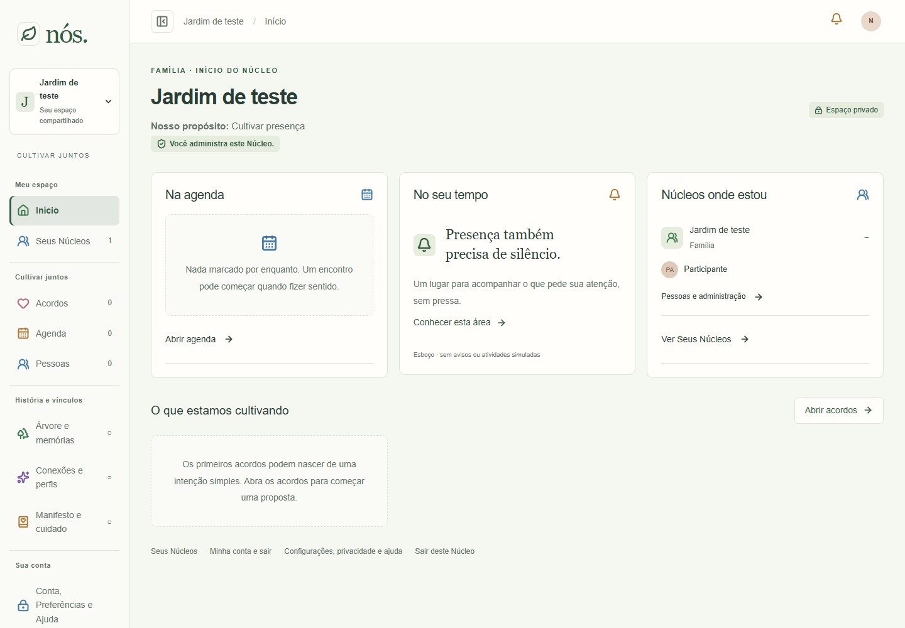
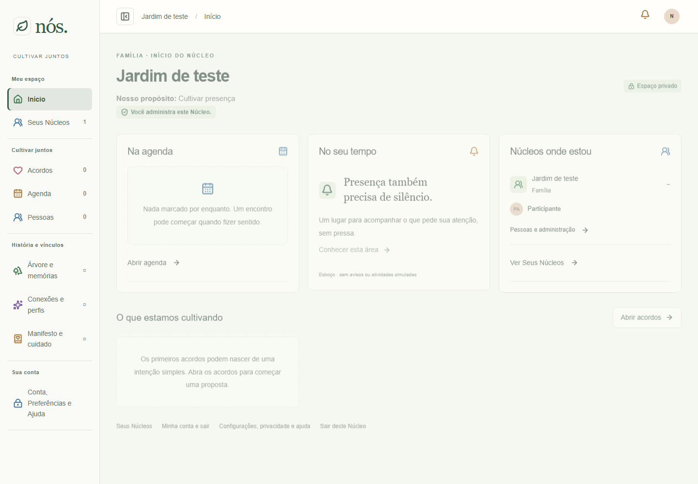
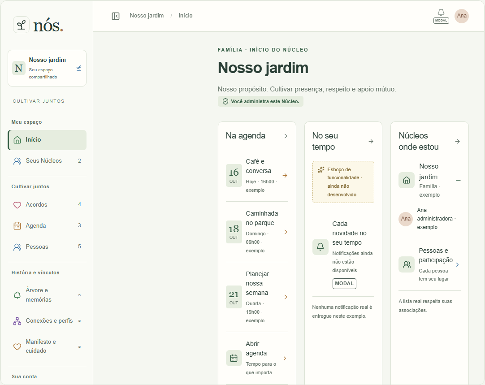
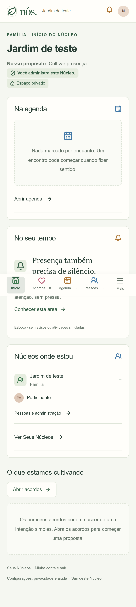
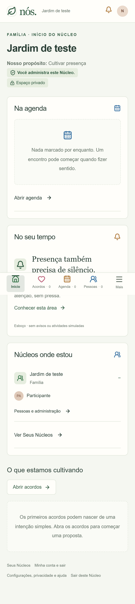
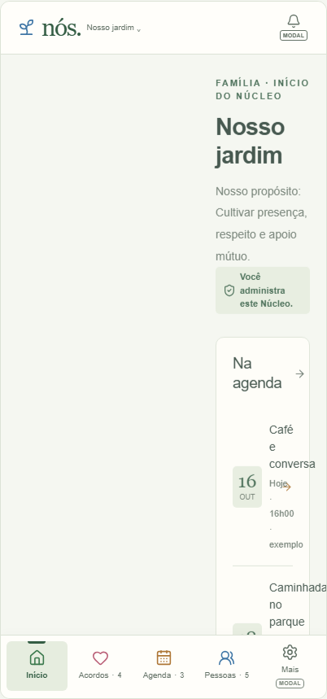
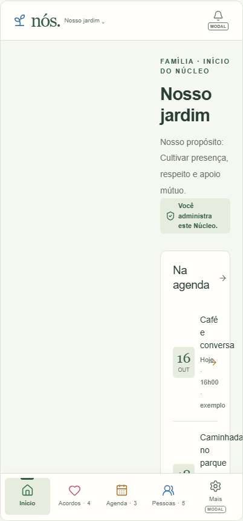

Componente global da barra lateral: cartão nome/Seu espaço compartilhado removido. Demais links, nome no cabeçalho, controle de ocultar/mostrar e navegação móvel preservados. Nenhum modal afetado. Conta e Núcleo descartáveis no Supabase local; Atlas ilustrativo. Capturas reais antes/depois em1440×1000 (desktop) e390×844 (celular; escala do dispositivo). No celular a barra lateral já não era visível; captura demonstra preservação do contexto móvel. Não certifica produção.






